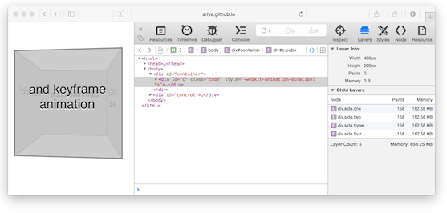

CSS硬件加速的好与坏
本文翻译自Ariya Hidayat的Hardware Accelerated CSS: The Nice vs The Naughty。感谢Kyle He帮助校对。
每个人都痴迷于60桢每秒的顺滑动画。为了实现这个顺滑体验现在用的最流行的一个做法就是使用『CSS硬件加速』。在一些极端例子中，强制使用translate3d意味着大大提高应用程序的性能。
现代浏览器大都可以利用GPU来加速页面渲染。在GPU的众多特性之中，它可以存储一定数量的纹理（一个矩形的像素点集合）并且高效地操作这些纹理（比如进行特定的移动、缩放和旋转操作）。这些特性在实现一个流畅的动画时特别有用。浏览器不会在动画的每一帧都绘制一次，而是生成DOM元素的快照，并作为GPU纹理（也被叫做层）存储起来。之后浏览器只需要告诉GPU去转换指定的纹理来实现DOM元素的动画效果。这就叫做GPU合成，也经常被称作『硬件加速』。
不幸的是，浏览器是一个很复杂的软件（Firefox有几百万行代码）。因此一句简单的『使用translate3d来提高性能』并不能囊括所有的情况。如果碰巧有效那不过是瞎猫碰上死耗子而已。所以有必要知道更多的运行机制，才能更好地处理实际情况。
想象使用GPU加速的动画就像是Vin Diesel（速度与激情的主角）开着Dominic标志性的汽车 —— Dodge Charger。它的定制900 hp引擎可以让它在一瞬间从0加速到60码。但是如果你开着它在拥挤的高速公路上又有什么用呢？这种情况下你选择的车辆Charger是正确的。但是问题是你还在一个拥堵的高速公路上。
GPU合成也是同样的道理。许多动画还是需要CPU的介入，这毕竟是浏览器工作的方式，你无法改变它。而连接CPU和GPU的总线的带宽不是无限的，所以需要关注数据在CPU和GPU之间的传输，要尽量避免造成通道的拥挤。换句话说你需要一直注意像素的传输。

首先也是最重要的任务就是了解创建的合成层的数量。因为每一个层都对应了一个GPU纹理，所以有太多的层会消耗很多内存。这可能导致出现预期之外的行为，可能会导致潜在的崩溃。幸运的是你很容易就能通过浏览器来检查页面上的合成层数量。
- 对于Firefox，打开
about:config然后设置layers.draw-borders为true。 - 如果是Chrome用户，打开
chrome://flags/#composited-layer-borders启用，然后打开开发工具勾选Show composited layer borders。 - 对于Safari用户，先打开终端运行
defaults write com.apple.Safari IncludeInternalDebugMenu 1。然后重新启动下Safari，菜单中找到一个开发菜单打开Web检查器就能在右边看到一个tab叫『层』了。选中之后你就可以在Web检查器的边栏中看到每个层的内存消耗。
当这些浏览器都正确的配置之后，每个DOM元素的合成层都会被标记一个额外的边框（你可以通过这个Spinning Cube Demo来测试下）。用这种方法就可以验证你的页面是否有太多的层。
另一个重点就是保持GPU和CPU之间的传输量达到最小值。换句话说，层的更新数量最好是一个理想的常量。每次合成层更新，一堆新的像素就可能需要传输给GPU。因此为了高性能，在动画开始之后避免层的更新也是很重要的（避免动画进行中时有其他层一直更新导致拥堵）。这可以通过选择恰当的CSS属性实现动画来解决：transformation（translate, scale, rotate）、opacity或者filters。
如果你在使用Safari的web检查器，选择『层』标签后就能在侧栏看到『绘图』区域。这里的数字代表了Safari提交当前层的新纹理次数。在Colorful Boxes这个demo上试一试。这个demo中每个box都会不停地修改自己的背景颜色。不幸地是修改box的背景色会强制合成层更新纹理，因此它的『绘图』数量会不停的变大。如果只有一个盒子，那还没什么关系，如果是几百个盒子那就很容易达到GPU的瓶颈。当然这是一个极端的例子，只是提醒下你在这种情况下translate3d也救不了你。
需求是创造之源。合成层的限制也会引导我们创造更多令人惊讶的方法来利用浏览器的硬件加速特性。比如我们可以将UI的初始状态和结束状态放在同一个合成层中，然后通过剪切的方法来显示一部分并隐藏另一部分。还有一个类似的方法是通过两层叠加造成视觉错觉来实现一些特别的效果。通过修改两个层的透明度来实现动画效果，比如这个Glowing Effect demo。
另外一个常用的方法就是维护一个合成层池，这样也可以减少像素的传输。当有些层不需要的时候，它们不会被销毁。它们会被移到屏幕之外或者设置为透明的。在一些情况下，UI设计时可以规定一个固定的合成层数量。比如下面这个Cover Flow的例子，同时只能显示9张图片。即使它需要可以显示成千上万的书本封面（在左右滑动时），你也不需要一次性构建这么多合成层。只需要一个小小的修改，那就是在滑动时将旧图片的层移出作为新图片的层使用。用户根本不会感觉到变化。
同样不要忘记你必须使用性能检测工具（profiler）来检查你的理论是否成立。性能优化是非常严肃的话题，如果只是依靠自己的直觉那就很容易出错。Chrome的用户应该启用chrome://flags/#show-fps-counter。同样Firefox也要在about:config里面启用layers.acceleration.draw-fps。通过帧率来检测你的动画。如果帧率下降到60fps（或者没达到你要的效果），那么就该调查下原因。Chrome的Timeline特性或者Safari的Timeline面板都可以让你了解渲染过程中的细节：layout、painting和合成。
为了做好性能的回归测试，自动实现如上操作是很有必要的。这时Parashuram的browser-perf就会变得非常有用。几星期前他已经写过一些博文来介绍自动化测试网页性能。对于本文的情况，测量层数和层更新次数是非常有用的。有了这些数据你就可以在数值超过限制的时候告警。
已经有许多文章讲述过CSS硬件加速这个课题了，希望这篇文章能成为另一个快速帮助手册，教你如何正确地使用GPU合成来加速你的CSS动画。远离麻烦丝般顺滑！